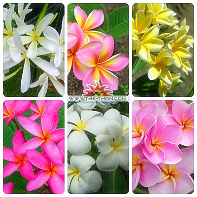
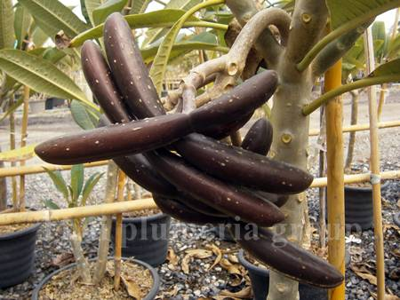

ลักษณะทั่วไป
ลีลาวดี มีชื่อสามัญว่า Plumeria, Frangipani, Temple tree (ชื่อวิทยาศาสตร์ว่า Plumeria spp.) จัดอยู่ในวงศ์ตีนเป็ด (APOCYNACEAE) และอยู่ในวงศ์ย่อยระย่อม (RAUVOLFIOIDEAE) มีชื่อท้องถิ่นอื่น ๆ ว่า จำปา, จงป่า (กาญจนบุรี), จำปาลาว (ภาคเหนือ), จำปาขาว (ภาคอีสาน), จำปาขอม (ภาคใต้), ไม้จีน (ยะลา), มอยอ (นราธิวาส), จำไป (เขมร) เป็นต้น โดยเป็นต้นไม้ที่นิยมปลูกกันอย่างแพร่หลายเพราะออกดอกตลอดปี เลี้ยงดูง่าย และสีของดอกลีลาวดีนั้นยังมีสีสันสดใส สวยงาม ไม่ว่าจะเป็น ขาว เหลืองอ่อน ชมพู แดง ฯลฯ ซึ่งบางดอกอาจจะมีมากกว่า 1 สีก็ได้และดอกลั่นทมยังเป็นดอกไม้ประจำชาติของประเทศลาวอีกด้วยครับด้วย
ลักษณะทั่วไป ไม้พุ่มขนาดเล็ก ลำต้นตั้งตรงมีขนตามลำต้นและก้านใบ มักแตกกอมาก
กิ่งก้านสี่เหลี่ยม
ลักษณะใบ ใบเดี่ยว เรียงตรงข้าม ใบรูปไข่กว้าง กว้าง 8-11 เซนติเมตร ยาว 12-16 เซนติเมตร ปลายใบแหลม
โคนใบรูปลิ่มหรือรูปหัวใจ ขอบหยักฟันซี่ห่าง แผ่นใบหนา ผิวใบด้านบนสีเขียวหม่น ผิวใบด้านล่างสีเขียวอ่อน
มีขนละเอียดทั้งสองด้าน

ลักษณะดอก สีขาว กลีบนอกสีชมพูอมม่วง มีกลิ่นหอม ออกเป็นช่อแบบช่อกระจุกที่ปลายกิ่ง ช่อดอกยาว 6-11
เซนติเมตร ช่อละ 3-5 ดอก กลีบเลี้ยงสีม่วงแดง โคนเชื่อมติดกัน ปลายแยกเป็น 5 แฉ
มีกลีบดอกจำนวนมากซ้อนกันแน่น ลักษณะคล้ายดอกมะลิซ้อน ทยอยบานและบานหลายวัน ช่อดอกบานเต็มที่กว้าง 6-10
เซนติเมตร

ลักษณะผล ผลสด ทรงกลมถึงรูปรี เมล็ดเดียวแข็ง แต่ไม่ค่อยติดผล
ระยะการออกดอกติดผล:ออกดอกตลอดทั้งปี
เขตการกระจายพันธุ์:ประเทศไทย พม่า